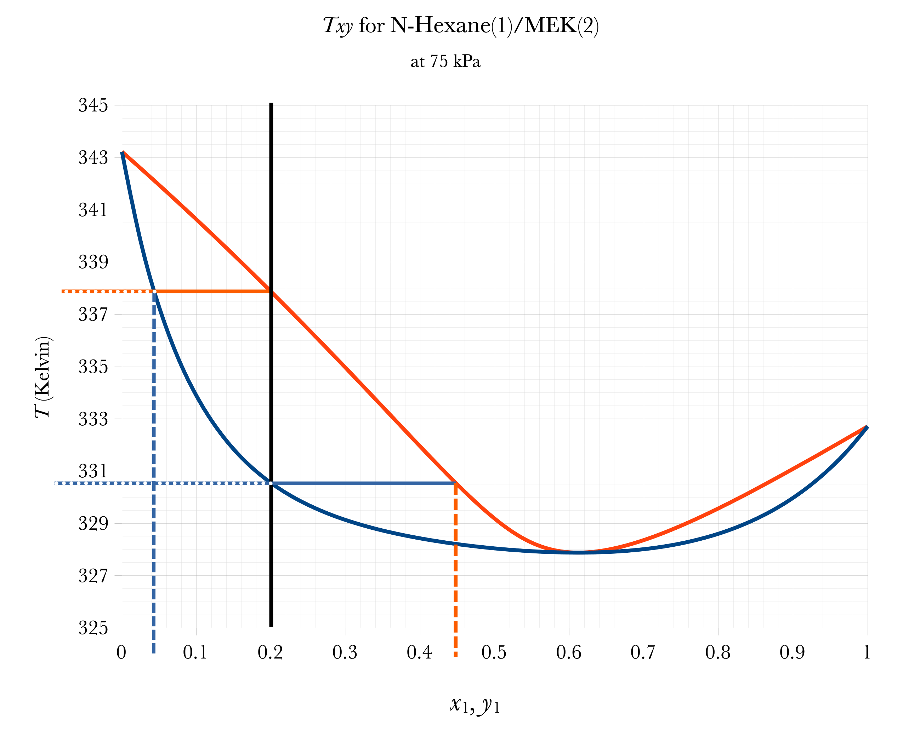

Dew Your Bubbles Have Flash? Part 1
DOFPro Team

Dew Your Bubbles Have Flash?
- Use Raoult’s law to perform vapor-liquid phase equilibria calculations.
- Not limited to binaries
- Multicomponent systems conforming to Raoult’s law
- Aliphatic hydrocarbon mixtures
- Aromatic hydrocarbon mixtures
- Part 1 – The basics and BUBL P and DEW P
- Part 2 – BUBL T and DEW T
- Part 3 – FLASH and Pxy and Txy diagrams
\(y_i\) – Vapor phase mole fraction
\(x_i\) – Liquid phase mole fraction
Multicomponent Systems
If the vapor phase is an ideal-gas mixture and the liquid phase is an ideal solution then Raoult’s Law holds.
\[ p_\mathrm{A} \equiv y_\mathrm{A}P = x_\mathrm{A}p_\mathrm{A}^*(T) \]
or in terms of species \(i\),
\[ y_{i}P = x_{i}p_{i}^{*}(T) (i=1, 2, 3, .., N) \tag{1}\]
In words, the partial pressure of a component is equal to the liquid mole fraction of the component times its vapor pressure. (If the vapor phase is not an ideal-gas mixture or the liquid phase is not an ideal solution then we are led to the realms of activity coefficients, fugacities and Poynting factors, i.e., the advanced phase equilibria videos)
BUBL, DEW, FLASH
For multicomponent mixtures, five types of calculations are usually performed using Raoult’s law:
- BUBL P – Given all \(x_{i}\)’s and \(T\), calculate \(P\) at which the first bubble forms, and \(y_{i}\)’s of the bubble.
- BUBL T – Given all \(x_{i}\)’s and \(P\), calculate \(T\) at which the first bubble forms, and \(y_{i}\)’s of the bubble.
- DEW P – Given all \(y_{i}\)’s and \(T\), calculate \(P\) at which the first droplet condenses, and \(x_{i}\)’s of the droplet.
- DEW T – Given all \(y_{i}\)’s and \(P\), calculate \(T\) at which the first droplet condenses, and \(x_{i}\)’s of the droplet.
- FLASH – Given overall composition (\(z_{i}\)’s) and \(T\) and \(P\), calculate \(x_{i}\)’s and \(y_{i}\)’s, and relative amounts of vapor, \(\mathcal{V}\), and liquid, \(\mathcal{L}\).
Graphical BUBL P, DEW P
Overall
Composition
Subcooled
Liquid
Superheated
Vapor
\(2\text{–}\phi\)
Bubble
Pressure
Bubble
Composition
Dew
Pressure
Dew
Composition
Low Boiling
Azeotrope
BUBL P
Given all \(x_{i}\)’s and \(T\), calculate \(P\) and \(y_{i}\)’s.
If necessary, begin by calculating all of the vapor pressures from the Antoine equation.
\[ p_{i}^{*} = 10^{A_{i} - \frac{B_i}{T+C_i}} \tag{2}\]
Raoult’s Law, Equation 1, \[y_{i}P = x_{i}p_{i}^{*}(T)\ \ \ (i=1, 2, 3, .., N)\]
can be rearranged as:
\[P = \sum_{n=1}^{N} x_{i}p_{i}^{*} \tag{3}\]
to calculate \(P\). Then calculate \(y_{i}\)’s from:
\[y_{i} = \frac{x_{i} p_{i}^*} {P}\ \ \ (i = 1, 2, 3, ..., N) \tag{4}\]
DEW P
Given all \(y_{i}\)’s and \(T\), calculate \(P\) and \(x_{i}\)’s. If necessary, begin by calculating all of the vapor pressures from the Antoine equation, Equation 2.
\[p_{i}^{*} = 10^{A_{i} - \frac{B_i}{T+C_i}}\]
Raoult’s Law, Equation 1, rearranged, gives
\[x_{i} = \frac{y_{i} P} {p_{i}^{*}}\ \ \ (i = 1, 2, 3, ..., N). \tag{5}\]
Also
\[ \sum_{i=1}^{N} x_i =1 \tag{6}\]
Then,
\[ 1 =P \sum_{i=1}^{N}\frac{y_i} {p_{i}^{*}} \tag{7}\]
and
\[ P = \frac {1} {\sum\limits_{i=i}^{N}\frac{y_i} {p_{i}^{*}}} \tag{8}\]
to calculate \(P\). Then calculate \(x_i\)’s from Equation 5.
The Takeaways
- Vapor-Liquid Equilibria (VLE) calculations for binaries can be done with a Pxy or Txy phase diagram.
- For mixtures that are ideal solutions in the liquid phase and ideal gases in the vapor phase, VLE calculations can be done with Raoult’s law and the Antoine equation.
- The five classes of calculations from easiest to hardest are: Bubble P, Dew P, Bubble T, Dew T, and Flash.
- However, flash calculations for binary mixtures are relatively straightforward.
Thanks for watching!
The previous in the series video is the link in the upper left. The next video in the series is the link the upper right. To learn more about Chemical and Thermal Processes, visit the website linked in the description.
Dew Your Bubbles Have Flash? Part 2
DOFPro Team
Dew Your Bubbles Have Flash?
- Use Raoult’s law to perform vapor-liquid phase equilibria calculations.
- Not limited to binaries
- Multicomponent systems conforming to Raoult’s law
- Aliphatic hydrocarbon mixtures
- Aromatic hydrocarbon mixtures
- Part 1 – The basics and BUBL P and DEW P
- Part 2 – BUBL T and DEW T
- Part 3 – FLASH and Pxy and Txy diagrams
Graphical BUBL T, DEW T

Overall
Composition
Subcooled
Liquid
Superheated
Vapor
\(2\text{–}\phi\)
Dew
Temperature
Dew
Composition
Bubble
Temperature
Bubble
Composition
Low Boiling
Azeotrope
BUBL T
Given all \(x_{i}\)’s and \(P\), calculate \(T\) and \(y_i\)’s
In general, an iterative solution is required. With a spreadsheet, the easiest method is to guess a temperature \(T_\mathrm{guess}\).
Calculate all of the vapor pressures from the Antoine equation, Equation 2,
\[ p_{i}^{*} = 10^{A_{i} - \frac{B_i}{T+C_i}}\ \ \ (i=1,2,3,.., N) \]
Then calculate the pressure from the guessed temperature
\[ P_\mathrm{guess} = \sum_{i=1}^{N} x_{i}p_{i}^{*} \tag{9}\]
Set up a cell to calculate the difference between the actual pressure and the guessed pressure, \(P_\mathrm{actual} - P_\mathrm{guess}\).
Have Goal Seek set the difference to 0 by varying \(T_\mathrm{guess}\).
\(T_\mathrm{guess}\) is now the correct temperature. You can calculate the \(y_i\)’s from Raoult’s law, Equation 5,
\[ y_{i} = \frac{x_{i}p_{i}^{*}}{P}\ \ \ (i=1,2,3,...,N) \]
Alternate Method: In a spreadsheet, guess a \(T\). For one component calculate \(p_{k}^{*}\) from Equation 11 and calculate \(p_{i}^{*}\) from the Antoine equation, Equation 2. Set a cell as the error between the two and goal seek to set that cell to \(0\) by varying \(T\).
Note: For a two-component system, if you are determining the \(y_i\)’s as a function of \(T\) at constant \(P\), you don’t need to iterate. Choose values of \(T\) between \(T_\mathrm{b1}\) and \(T_\mathrm{b2}\), and calculate the \(y_i\)’s using the Antoine equation, Equation 2 and Raoult’s law, Equation 5.
If you prefer programming to spreadsheets, begin by picking an arbitrary component, \(k\), then:
\[ P = p_{k}^{*} \sum_{i=1}^{N} x_{i} \frac{p_{i}^{*}}{p_{k}^{*}} \tag{10}\]
or
\[ p_{k}^{*} = \frac{P}{\sum\limits_{i=1}^{N} x_{i} \alpha_{ik}} \tag{11}\]
where the relative voltatility, \(\alpha_{ik}\), is defined as:
\[ \alpha_{ik} \equiv \frac{p_{i}^{*}}{p_{k}^{*}} \tag{12}\]
If the vapor pressures are related by the Antoine equation, Equation 2:
\[ \log_{10} p^* = A - \frac{B}{T + C} \]
then we can calculate,
\[ \log_{10}\alpha_{ik} = A_i - A_k - \frac{B_i}{T + C_i} + \frac{B_k}{T + C_k} \tag{13}\]
One can begin the iteration with an initial guess
\[ T_{0} = \sum_{i=1}^{N} x_{i}T_{i}^{*} \tag{14}\]
This \(T_{0}\) can be used to evaluate all of the \(\alpha_{ik}\)’s in Equation 12, which are then used in Equation 11 to calculate \(p_k^*\), from which a new value of \(T\) can be calculated from:
\[ T_1 = \frac{B_k} {A_{k} - \log_{10} p_{k}^{*} - C_{k}} \tag{15}\]
The iteration is repeated until \(T\) doesn’t change much from one iteration to the next. The Antoine equation, Equation 2 is then used to calculate all \(p_i^*\), then use Raoult’s law, Equation 5 to calculate the \(y_i\)’s.
DEW T
Given all \(y_i\)’s and \(P\), calculate \(T\) and \(x_i\)’s.
In general, an iterative solution very similar to BUBL T is required. With a spreadsheet, the easiest method is to guess a temperature \(T_\mathrm{guess}\) .
Calculate all of the vapor pressures, \(p_i^*\)’s, from the Antoine equation, Equation 2
\[ P_{i}^{*} = 10 ^ {A - \frac{B_i}{T+C_i}}\ \ \ (i = 1, 2, 3, ..., N) \]
Then calculate the pressure from the guessed temperature using Equation 8,
\[ P_\mathrm{guess} = \frac{1}{\sum\limits_{i=1}^{N}\frac{y_i}{p_{i}^{*}}} \]
Set up a cell to calculate the difference between the actual pressure and the guessed pressure, \(P_\mathrm{actual} - P_\mathrm{guess}\).
Have Goal Seek set the difference to \(0\) by varying \(T_\mathrm{guess}\).
\(T_\mathrm{guess}\) is now the correct temperature. You can calculate the \(x_i\)’s from Raoult’s law, Equation 5,
\[ x_i = \frac{y_{i} P} {p_{i}^{*}}\ \ \ (i = 1,2,3, ..., N) \]
Alternate Method: As before, in a spreadsheet, guess a \(T\). For one component calculate \(p_{k}^{*}\) from Equation 17 and calculate \(p_{i}^{*}\) from the Antoine equation, Equation 2. Set a cell as the error between the two and goal seek to set that cell to 0 by varying \(T\).
If you prefer programming to spreadsheets, begin by picking an arbitrary component, \(k\), then:
\[ P = \frac{p_{k}^{*}}{\sum\limits_{i=1}^{N}y_{i}\frac{p_{k}^{*}}{p_{i}^{*}}} \tag{16}\]
or
\[ p_{k}^{*} = P \sum_{i=1}^{N} \frac{y_j}{\alpha_{ik}} \tag{17}\]
where the relative volatility, \(\alpha_{ki}\), is defined in Equation 12 and calculated using Equation 13.
The initial guess is:
\[ T_0 = \sum_{i=1}^{N} y_{i}T_{i}^{*} \tag{18}\]
This \(T_0\) can be used to evaluate all of the \(a_{ik}\)’s in Equation 12 which are then used in Equation 11 to calculate \(p_{k}^{*}\), from which a new value of \(T\) can be calculated from Equation 15:
\[ T_1 = \frac{B_k}{A_k - \log_{10} p_{k}^{*}} - C_k \]
After convergence we evaluate the \(x_i\)’s from Raoult’s law, Equation 5:
\[ x_i = \frac {y_{i}P}{p_{i}^{*}}\ \ \ (i = 1, 2, 3, ..., N) \]
The Takeaways
- Vapor-Liquid Equilibria (VLE) calculations for binaries can be done with a Pxy or Txy phase diagram.
- For mixtures that are ideal solutions in the liquid phase and ideal gases in the vapor phase, VLE calculations can be done with Raoult’s law and the Antoine equation.
- The five classes of calculations from easiest to hardest are: Bubble P, Dew P, Bubble T, Dew T, and Flash.
- However, flash calculations for binary mixtures are relatively straightforward.
Thanks for watching!
The previous in the series video is the link in the upper left. The next video in the series is the link the upper right. To learn more about Chemical and Thermal Processes, visit the website linked in the description.
Dew Your Bubbles Have Flash Part 3
DOFPro Team
Dew Your Bubbles Have Flash?
- Use Raoult’s law to perform vapor-liquid phase equilibria calculations.
- Not limited to binaries
- Multicomponent systems conforming to Raoult’s law
- Aliphatic hydrocarbon mixtures
- Aromatic hydrocarbon mixtures
- Part 1 – The basics and BUBL P and DEW P
- Part 2 – BUBL T and DEW T
- Part 3 – FLASH and Pxy and Txy diagrams
Graphical FLASH on Pxy
Overall
Composition
Subcooled
Liquid
Superheated
Vapor
\(2\text{–}\phi\)
Flash Temperature
Flash
Pressure
Liquid
Composition
Vapor
Composition
\(a\)
\(b\)
\(\mathcal{V} = \dfrac{a}{a+b}\)
\(\mathcal{L} = 1-\mathcal{V} = \dfrac{b}{a+b}\)
FLASH
Given \(z_i\)’s and \(T\) and \(P\), calculate \(x_i\)’s and \(y_{i}\)’s, and relative amounts of vapor, \(\mathcal{V}\), and liquid, \(\mathcal{L}\).
\[ \mathcal{V} \equiv \frac{n_\mathrm{{vapor}}}{n_\mathrm{{total}}} \tag{19}\]
and
\[ \mathcal{L} \equiv \frac{n_\mathrm{{liquid}}}{n_\mathrm{{total}}} \tag{20}\]
so
\[ \mathcal{L} + \mathcal{V} = 1 \tag{21}\]
and
\[ z_{i} = x_{i}\mathcal{L} + y_{i}\mathcal{V}\ \ \ (i=1, 2, 3, ..., N) \tag{22}\]
or
\[ z_{i} = x_{i}(1-\mathcal{V}) + y_{i}\mathcal{V}\ \ \ (i= 1, 2, 3, ..., N) \tag{23}\]
We will now use the K-value or distribution coefficient, defined as
\[ K_{i} \equiv \frac{p_{i}^{*}}{P} \tag{24}\]
which for Raoult’s law yields
\[ K_{i} = \frac{y_i}{x_i} \tag{25}\]
or
\[ x_{i} = \frac{y_i}{K_i} \tag{26}\]
Substitution into Equation 23 yields
\[ y_{i} = \frac{z_{i}K_{i}}{1+\mathcal{V} (K_{i} - 1) }\ \ \ (i = 1, 2, 3, ..., N) \tag{27}\]
or
\[ \sum_{i=1}^{N} \frac{z_{i}K_{i}}{1 + \mathcal{V} (K_{i} -1)} = 1 \tag{28}\]
which is solved for \(\mathcal{V}\) by numerical methods (such as Goal Seek). Then find the \(y_{i}\) from Equation 27 and the \(x_{i}\) from Equation 26.
For a binary, there is an analytical method for solving for \(\mathcal{L}\) and \(\mathcal{V}\). Discovering the method is left as an exercise to the viewer.
Example
The binary system benzene(1)/toluene(2) conforms closely to Raoult’s law. Vapor pressures for the pure species are given by the following Antoine equations:
\[ \log_{10} p_\mathrm{b}^{*} / \mathrm{bar} = 4.01814 - \frac{1203.835}{T /\mathrm{K} - 53.226} \]
\[ \log_{10}p_\mathrm{t}^{*} / \mathrm{bar} = 4.07827 - \frac{1343.943}{T / \mathrm{K} - 53.773} \]
Prepare a graph showing \(P\) vs. \(x_b\) and \(P\) vs. \(y_b\) for a temperature of 100°C.
Prepare a graph showing \(T\) vs. \(x_b\) and \(T\) vs. \(y_b\) for a pressure of 1 bar
For a \(Pxy\) diagram, we need \(P\) as a function of \(x_1\), and \(P\) as a function of \(y_1\), or \(x_1\) and \(y_1\) as a function of \(P\). From Equation 3
\[ P = \sum_{i=1}^{N} x_{i}p_{i}^{*} + (1-x_{i})p_{2}^{*} = (p_{1}^{*} - p_{2}^{*}) x_1 + p_{2}^{*} \]
which is a linear function of \(x_1\) that runs from \(p_{2}^{*}\) at \(x_1\) = 0 to \(p_{1}^{*}\) at \(x_1\) =1.
From Equation 8
\[ P = \frac{1}{\sum\limits_{i=1}^{N} \frac{y_i}{p_{1}^{*}}} = \frac{1}{\frac{y_1}{p_{1}^{*}} + \frac{1-y_1}{p_{2}^{*}}} = \frac{p_{1}^{*}p_{2}^{*}}{(p_{2}^{*} - p_{1}^{*}) y_1 + p_{1}^{}*} \]
\(p_{1}^{*}\) and \(p_{2}^{*}\) are determined from the Antoine equations.
\(P\) vs. \(x_1\) and \(P\) vs. \(y_1\) for a temperature of 100°C.
For a \(T_{xy}\) diagram, we either need to use Goal Seek or we need \(x_1\) and \(y_1\) as a function of \(T\). From From Equation 3
\[ P = (p_{1}^{*} - p_{2}^{*}) x_1 + p_{2}^{*} \]
\[ \Rightarrow x_1 = \frac{P-p_{2}^{*}}{p_{1}^{*} - p_{2}^{*}} \]
Pick a series of temperatures between \(T_\text{1-bp}\) and \(T_\text{2-bp}\) and calculate \(p_{1}^{*}\) and \(p_{2}^{*}\) and then \(x_1\).
From Equation 8
\[ P = \frac{p_{1}^{*}p_{2}^{*}}{(p_{2}^{*}-p_{1}^{*}) y_{1} + p_{1}^{*}} \]
\[ \Rightarrow y_1 = \frac{p_{1}^{*}}{P} \frac{P-p_{2}^{*}}{p_{1}^{*} - p_{2}^{*}} \]
Pick a series of temperatures between \(T_\text{1-bp}\) and \(T_\text{2-bp}\) and calculate \(p_{1}^{*}\) and \(p_{2}^{*}\) and then \(y_1\).
\(T\) vs. \(x_1\) and \(T\) vs. \(y_1\) for a pressure of 1 bar.
The Takeaways
- Vapor-Liquid Equilibria (VLE) calculations for binaries can be done with a Pxy or Txy phase diagram.
- For mixtures that are ideal solutions in the liquid phase and ideal gases in the vapor phase, VLE calculations can be done with Raoult’s law and the Antoine equation.
- The five classes of calculations from easiest to hardest are: Bubble P, Dew P, Bubble T, Dew T, and Flash.
- However, flash calculations for binary mixtures are relatively straightforward.
Thanks for watching!
The previous in the series video is the link in the upper left. The next video in the series is the link the upper right. To learn more about Chemical and Thermal Processes, visit the website linked in the description.